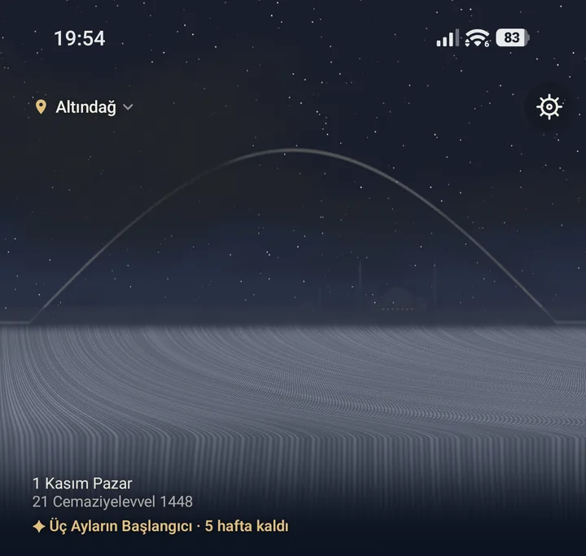

İki ekran da yalnızca stil rehberindeki bileşenlerden kuruldu. Statik; tıklanmaz. Gökyüzü senin dusk.webp plakan, gül onaylı gul-3d.html (three.js internetten yüklenir).
Namaz · ana sayfa
15:47%82

Çankaya
4KAS
4 Kasım 2026, Çarşamba
23 Cemâziyelevvel 1448
✦ Regâib Kandili · 36 gün
Akşam vaktine01:37:12İkindi kılındı
İmsak05:41'de kılındı05:31
Güneş06:58
Öğle12:30'da kılındı12:13
İkindi15:06'da kılındı14:59
Akşam17:24
Yatsı18:45
Namaz
Zikir
Okuma
Muhasebe
Muhasebe › Özet
15:47%82
Muhasebe
Özet
Gidişat
Kaza
Bugünimsaktan imsaka
375/604
Hatim
21/30
Son 30 gün
Namazlarını çoğunlukla vaktin başında kılıyorsun.
Son 30 gün
%91
vakitler kılındı
Seri
12 gün
üst üste tam
Namaz
Zikir
Okuma
Muhasebe
Bugünkü uygulamadan farklar (öneri, onay bekliyor):
Dock: dört sekme. Zikir yeni (tesbih ikonu), Kıble'nin boşalttığı yere geldi.
Muhasebe üst menüsü: "Muhasebe" başlığı + Segmented hap yerine büyük Cormorant başlık (large app bar) ve altın çizgili birincil sekmeler.
Kartlar: 14 dp gölge kalkar. Tonal yüzey, üst parıltı ve 1 px cam kenar kalır. Gölge yalnız gökyüzü üstündeki dock'ta.
Gövde yazısı: sistem fontu yerine Inter. Başlık ve rakamlar Cormorant olarak kalıyor.
Ana sayfa başlığı: yerleşim aynı (konum çipi, Kıble, ayar, tarih karosu). Yalnız ikonlar ince çizgiye geçer ve tarih bilgisi metin tokenlarına bağlanır.